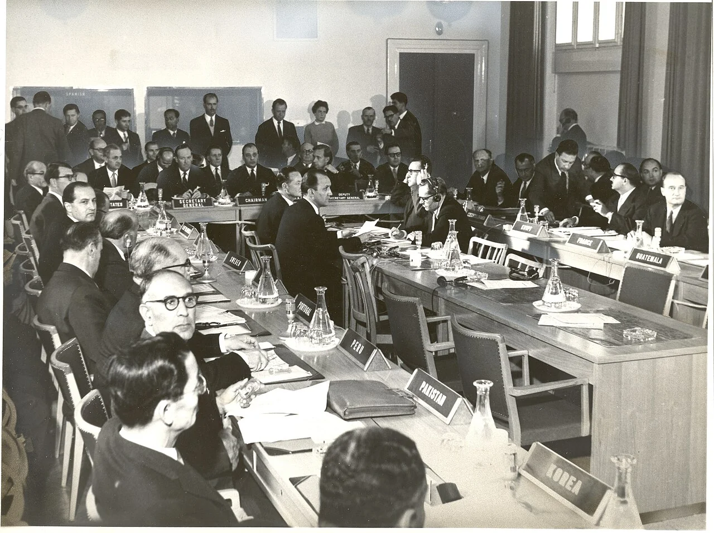
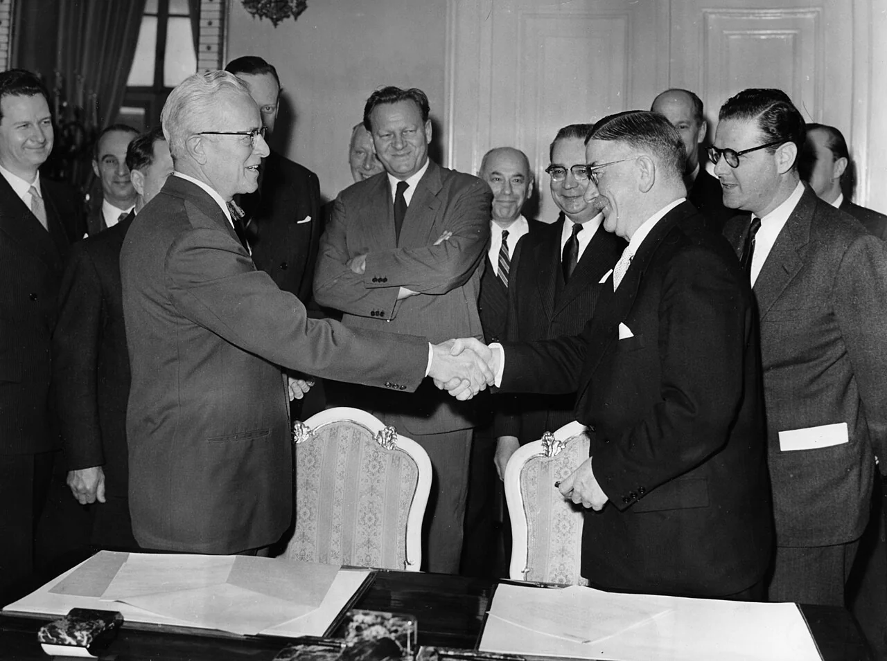

Nuclear History · 181
The Atom's UN Started Out in a Hotel Building — The Founding of the IAEA (1957) and Its Two Built-In Missions
A short speech became a 23-article statute, and an agency born to spread the atom and to guard it at the same time.
Eisenhower proposed an international atomic agency in December 1953, but it took three years and seven months of negotiation to build one. The Statute of the International Atomic Energy Agency was approved by 81 nations on 23 October 1956 and entered into force on 29 July 1957, giving the new body two missions that pull in different directions: spreading the peaceful use of nuclear energy and ensuring that its help never furthers a military purpose.
An agency that started out in a hotel building
On Vienna's Kärntner Ring, one stretch of the grand boulevard that circles the old city, stands an elegant building that today trades as the Grand Hotel. Few guests will know that from 1958 to 1979, for 21 years, it housed the secretariat of the International Atomic Energy Agency (IAEA), the organization charged both with spreading the peaceful use of nuclear energy and with keeping watch over it. [1]
The idea goes back to 8 December 1953, when US President Dwight D. Eisenhower stood before the UN General Assembly and delivered his "Atoms for Peace" speech. But a speech is not an institution. Turning it into one took three years and seven months.
A short speech, a 23-article statute
Eisenhower's big picture was simple: nations would deposit nuclear material with an international agency, which would share it out for agriculture, medicine and electricity. Writing that picture into treaty language was much harder.
The first negotiators were eight countries: the United States, the United Kingdom, France, Canada, Australia, Belgium, Portugal and the Union of South Africa, a mix of Western nuclear powers and uranium producers. With the Cold War at its height, the Soviet Union at first stayed outside the room. In February 1956 it was brought in, together with India, Brazil and Czechoslovakia, making a "12-nation group." Between 27 February and 18 April 1956 the twelve held 18 working-level meetings in Washington and unanimously adopted a revised draft statute. [3]
![Flow chart in six cards: 8 December 1953 Eisenhower's UN speech proposes an atomic agency; 27 February to 18 April 1956 a 12-nation group holds 18 meetings in Washington; 23 October 1956 the Statute Conference in New York approves the statute unanimously with 81 nations; 26 October 1956 70 states sign on the first day and 18 ratifications are needed; 29 July 1957 the statute enters into force; 1 to 23 October 1957 the first General Conference meets at the Konzerthaus in Vienna with 57 nations and Sterling Cole as first Director General](../../assets/images/history/181-iaea-founding/fig1-road-to-vienna.webp)
Thirty-seven days in New York: sovereignty versus inspection
The draft then went to the Conference on the Statute, held at UN Headquarters in New York from 20 September to 26 October 1956. According to the IAEA's own record, 81 nations approved the Statute unanimously on 23 October (some accounts count 82 participating states, and some US documents give the adoption date as 26 October). Three days later, on 26 October, the Statute was opened for signature, and 70 states signed on the first day. [1] [4]
Unanimity did not mean harmony. The hottest issue was inspection. US records of the conference show that the Soviet bloc and the Indian delegation criticized the inspection provisions as a potential infringement of national sovereignty, while the United States, Canada, the United Kingdom, the Netherlands and Australia defended them as the thing that would make the agency credible. India's Homi J. Bhabha (1909–1966) was still pressing the point at the 1960 General Conference, arguing in substance that a draft safeguards system was non-discriminatory in form but would be very discriminatory in practice. The tension between countries that had nuclear technology and countries that wanted to learn it would outlive that debate by decades.
The number 18, and 29 July
Signatures alone did not bring the Statute to life. Article XXI said it would enter into force once 18 states had deposited instruments of ratification with the US government, and those 18 had to include at least three of five named states: Canada, France, the Soviet Union, the United Kingdom and the United States. In other words, the agency could not start as an empty shell without the countries that actually held nuclear materials and know-how. [2]
That condition was met, and the Statute entered into force, on 29 July 1957, the IAEA's official birthday. (Some sources describe the date as that of the US ratification; the IAEA marks it as the day the Statute took effect.) The Republic of Korea, according to the chronology of its National Archives, joined ten days later, on 8 August 1957.
Two missions in one paragraph
Article II of the Statute is just two sentences. The first says the Agency "shall seek to accelerate and enlarge the contribution of atomic energy to peace, health and prosperity throughout the world." The second says it "shall ensure, so far as it is able," that assistance it provides "is not used in such a way as to further any military purpose." Spread the atom, and stop it leaking into weapons: the agency was born carrying two jobs that pull in different directions. [2]
![Diagram with Article II at the centre and two panels: on the left, Mission 1 Promote, quoting the aim to accelerate and enlarge atomic energy's contribution to peace, health and prosperity, with Article III functions such as aiding research, brokering supplies between members, electric power for poorer regions and safety standards; on the right, Mission 2 Ensure, quoting the aim that aid does not further any military purpose, with Article XII safeguards such as design review, operating records, inspectors with access to sites and data, and curtailing aid on violation; a note below says the IAEA is not a national nuclear regulator](../../assets/images/history/181-iaea-founding/fig2-two-missions.webp)
Article III handles the promoting: supporting research and practical uses, acting as a broker for materials and equipment between members, with explicit mention of electric power and "the needs of the under-developed areas of the world," and setting safety standards to protect health and life. The speech's "atomic pool" did not survive as a giant shared stockpile; it turned into this brokering role. Article XII handles the ensuring, through safeguards, the checks that nuclear material is used only for peaceful purposes. It lists design review, operating records and the right to send inspectors who "shall have access at all times to all places and data." If a violation is not corrected, the Board can curtail or suspend assistance and call for materials and equipment to be returned.
A common misunderstanding is worth clearing up here. The IAEA is not a regulator that licenses nuclear power plants. It writes and recommends safety standards, but licensing and safety regulation remain the job of each member state. The Statute itself says the Agency's work must be carried out "with due observance of the sovereign rights of States."
A first General Conference in a concert hall
From 1 to 23 October 1957 the first General Conference met in Vienna's Konzerthaus, a concert hall, bringing together diplomats and scientists from 57 nations. The first Director General was W. Sterling Cole (1904–1987), a former US congressman from New York. Under the Statute, the Director General is appointed by the Board of Governors with the approval of the General Conference for a four-year term. [1]

On 11 December 1957, Cole and Austria's foreign minister, Leopold Figl (1902–1965), signed the headquarters agreement; after an exchange of notes it took effect on 1 March 1958. The secretariat moved into that building on the Kärntner Ring.

From a hotel building to a Nobel Prize
IAEA laboratories opened at Seibersdorf, outside Vienna, in 1959. On 23 August 1979 the Vienna International Centre officially opened, and the Agency moved to the headquarters it still occupies. Over the following decades its safeguards system grew far more detailed, especially once it became tied to the Treaty on the Non-Proliferation of Nuclear Weapons. In 2005 the Agency and its Director General, Mohamed ElBaradei, shared the Nobel Peace Prize. Its membership has grown to 180 states, according to the IAEA's official list as of November 2024. [1] [5]
From the very beginning the agency had a helping hand and a watchful eye. The tug-of-war between the two that still shapes it was, in a sense, written into its birth certificate.